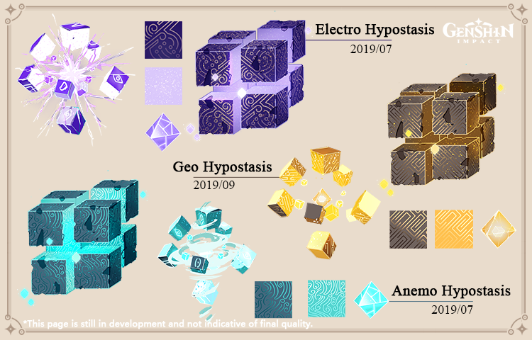

Genshin Impact contains a lot of interesting characters, monsters, mysteries, and other content.
Today we're going to talk about one of our most interesting enemies — the Hypostasis

Hypostases (Hypostasis is singular) are primitive structures made of pure
elemental energy that can be found in Teyvat. They are beings of extremely concentrated, high-quality
energy that usually appear in places where ley lines have become blocked or elemental energy has otherwise accumulated.
They appear in the form of ordered cubic units that surround an inner core, and will actively try to
attack any Travelers who come near them.
〓Hypostasis Design Process〓
During our June 2019 beta test, we found that our designs around the idea of
'elements' were not ideal. Most Traveler's understanding of the elemental system
simply stopped simply at "bonus damage," without using the system to further advance
their tactics. In the past six months, we have tried a variety of methods to convey the
greater complexities of the elemental system to Travelers, including designing the Hypostasis.
We hope that when Travelers first see it, their natural reaction will be "Oh, I think
I need to have X character on my team to deal with this."
So the question then became; "How do we get Travelers to experience the different elements through
the same enemy. The matter was much the same as the Abyss Mage seen in our first beta, yet more complex.
We needed the elemental experience to be stronger, strong enough to get Travelers to change up
their tactics, party members, weapons, etc.
When it comes to designing a monster, there are two core elements; artistic appearance
and gameplay mechanics. As far as artistic appearance is concerned, we wanted the Hypostasis to embody
the idea of "natural order." In contrast to the unregulated and curved appearance of Slimes and Hilichurls,
Hypostases are cubic and orthogonal, to give it an appearance of being a greater life form.
For this, we drew a lot of inspiration from Ramiel from Evangelion and Galvatron from Transformers.
Ramiel is simple in form but can change into many different shapes. Galvatron comes together from many smaller pieces,
which helped us to better display the right effects when the Hypostasis transforms. As such, we referenced
these elements as we proceeded to make our own new content.

Ramiel from Evangelion
After discussions with the design team, we finalized our plan. Hypostases were to be elemental beings, with a design
that featured all-new modeling and movements, so it was made of cubic formations clustered together, which would allow it
to alter its form and use a range of elemental skills.
In the beginning, we believed that designing a creature that could change its form and move so violently would be very
complex. But as early as July we were already able to see the early design in motion in animation software, as we discovered
that it wasn't so hard to create after all.

Early Hypostasis Animation